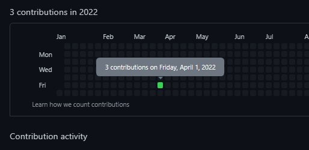
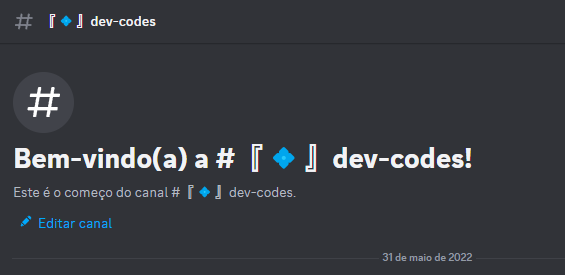

1 de Abril de 2021
Parece mentira mas é verdade

A primeira vez que tive vontade de ser um Dev parece até brincadeira, no dia 1º de Abril de 2022 fiquei algumas horas consumindo conteúdos sobre programação, com isso, fiquei animado e desesperado ao mesmo tempo, porque entendi que tinha muita informação e não entendia quase nada, acabei estudando poucos dias seguintes e continuei sem entender nada e que não era pra mim.
Mesmo sem nem tentar, apenas desisti.
31 de Maio de 2022
Minha "primeira" visão de códigos

Por causa de uns amigos, criei a quase 1 ano atrás um canal no discord
chamado dev-codes, para simplesmente não bagunçar o
chat geral, e com isso, acabei vendo "mesmo sem entender nada" muitos
códigos que meus amigos tentavam explicar para mim, mas não me
interessava em estudar pois eu já tinha tentado antes, mas sei que não
tinha me esforçado o bastante e apenas deixei passar. Depois de algum
tempo até tentei novamente mas acabei procrastinando e fiquei no meu
conforto pessoal.
Mas eu acabei vendo muitas informações que me deixaram bem cuirioso.